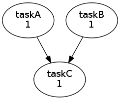

Cylc
What is Cylc¶
Cylc is a general purpose workflow engine that can also orchestrate cycling systems very efficiently. It is used in production weather, climate, and environmental forecasting on HPC, but is not specialised to those domains.
Using a workflow engine may enable you to run large parametric or sensitivity studies while ensuring scalability, reproducibility and flexibility. If you have embarrassingly parallel jobs then Cylc might be a good solution for you. The workflow engine will allow for the concurrent execution of parallel jobs, depending on the task graph and available resources on the platform. One advantage of this approach over running a monolithic, parallel executable is that each task will require less resources that the complete problem, it is thus easier for each task to slip into the queue and start running.
See the NeSI Snakemake page for another, possible choice.
In this article, we show how you can create a simple workflow and run it on NeSI's platform. Consult the Cylc documentation for more elaborate examples, including some with a cycling (repeated) graph pattern. One of the strengths of Cylc is that simple workflows can be executed simply while allowing for very complex workflows, with thousands of tasks, which may be repeated ad infinitum.
SSH configuration¶
Cylc uses ssh to automatically start schedulers on configured "run hosts" and to submit jobs to remote platforms, so if you haven't already done so you need to allow ssh to connect to other hosts on the HPC cluster without prompting for a passphrase (all HPC nodes see the same filesystem, so this is easy):
- run
ssh-keygento generate a public/private key pair with no passphrase (when it asks for a passphrase, just hit enter) - add your own public key to your authorized keys
file:
cat .ssh/id_rsa.pub >> .ssh/authorized_keys - check that your keys, authorized_keys file, ssh
directory, and home directory all have sufficiently secure
file permissions. If not,
sshwill silently revert to requiring password entry. See for example https://www.frankindev.com/2020/11/26/permissions-for-.ssh-folder-and-key-files/ - make sure your home directory has a maximum of 750 permissions
Now you should be able to run ssh mahuika02(for example) without
being asked for a passphrase.
How to select the Cylc version¶
Cylc has been installed on Māui and Mahuika, there is no need to load any module,
$ which cylc
/opt/nesi/share/bin/cylc
(Access if via the NeSI module, which is loaded by default.)
Be aware that the default version
$ cylc version
7.9.1
is not the latest, and that configuration file and Cylc commands have changed significantly at version 8.
New Cylc users should use version 8 or later,
$ cylc list-versions
7.9.1
...
8.0.1
cylc -> 7.9.1
You can select your Cylc version by setting the environment variable CYLC_VERSION, for instance,
$ export CYLC_VERSION=8.0.1
$ cylc version
8.0.1
At the time of writing, the latest version is 8.0.1.
A simple example of a Cylc workflow¶
To demonstrate Cylc, let's start with a workflow, which we call "simple",
$ mkdir -p ~/cylc-src/simple
$ cd ~/cylc-src/simple
Create/edit the following flow.cylc file containing
[scheduling] # Define the tasks and when they should run
[[graph]]
R1 = """ # R1 means run this graph once
taskA & taskB => taskC # Defines the task graph
"""
[runtime] # Define what each task should run
[[root]] # Default settings inherited by all tasks
platform = mahuika-slurm # Run "cylc conf" to see platforms.
[[[directives]]] # Default SLURM options for the tasks below
--account = nesi99999 # CHANGE
[[taskA]]
script = echo "running task A"
[[[directives]]] # specific SLURM option for this task
--ntasks = 2
[[taskB]]
script = echo "running task B"
[[taskC]]
script = echo "running task C"
In the above example, we have three tasks (taskA, taskB and taskC), which run under SLURM (hence platform = mahuika-slurm). Type
cylc config --platform-names
to see a list of platforms. The SLURM settings for taskA are in the [[[directives]]] section.
How to interact with Cylc¶
Cylc takes command lines. Type
$ cylc help all
to see the available commands. Type
$ cylc help install # or cylc install --help
to find out how to use a specific command (in this case "install").
Installing a workflow¶
Prior to running a workflow, it must be installed to a run directory. Due to limited disk space in home directories on NeSI, Cylc has been configured to symlink the standard run directories to project directories, if $PROJECT is defined. Hence, you need to set
$ export PROJECT=nesi99999 # CHANGE
Then install the workflow with
cylc install simple
Validating the workflow¶
It's a good idea to check that there are no syntax errors in flow.cylc,
$ cylc validate simple
Valid for cylc-8.0.1
Looking at the workflow graph¶
A useful command is
$ cylc graph simple
which will generate a png file, generally in the /tmp directory with a name like /tmp/tmpzq3bjktw.PNG. Take note of the name of the png file. To visualise the file you can type
$ display /tmp/tmpzq3bjktw.PNG # ADJUST the file name
Here, we see that our workflow "simple" has a "taskC", which waits for "taskA" and "taskB" to complete,

The "1" indicates that this workflow graph is executed only once.
Different ways to interact with Cylc¶
Every Cylc action can be executed via the command line. Alternatively, you can invoke each action through a terminal user interface (tui),
$ cylc tui simple
Another alternative, is to use the graphical user interface
$ cylc gui
Read below on how access the web interface running on NeSI using your local browser.
Connecting via Jupyter¶
If you're connecting through https://jupyter.nesi.org.nz you'll need to replace anything before the ":" with https://jupyter.nesi.org.nz/user/USERNAME/proxy/ to get access to the web graphical user interface (where USERNAME is your NeSI user name). Hence the URL becomes https://jupyter.nesi.org.nz/user/USERNAME/proxy/8888/cylc?token=TOKEN
Connecting via SSH¶
First open ssh tunnelling, so that a given port on your local machine (e.g. your laptop) maps to the Cylc UI Server’s port on the HPC. On your local machine, type
$ ssh -N -L PORT:localhost:PORT HOST
where PORT is a valid port number and HOST can be Māui or mahuika. See the NeSI page for the range of allowed ports (currently 1024-49151). Choose any number in this range but make sure your port number is fairly unique to avoid clashing with other users. Option -N is optional: it opens the connection without logging you into the shell.
Then ssh to the host (e.g. mahuika)
$ ssh HOST
and add the following to $HOME/.cylc/uiserver/jupyter_config.py on the HOST.
c.ServerApp.open_browser=False
c.ServerApp.port=PORT
where PORT and HOST match the values you selected when opening the ssh tunnel.
You're now ready to fire up the web graphical interface
$ cylc gui
Just copy the URL that looks like
http://127.0.0.1:PORT/cylc?token=TOKEN
into your web browser. (Again substitute HOST and PORT with the values chosen above.)
How to execute a workflow¶
To execute the workflow type
$ cylc play --no-detach simple
The "--no-detach" option makes scheduler run in the foreground so you can see its output in your terminal. Without this option it will "daemonize" so it can keep running even if you log out.
Command
$ cylc scan
will list all running and installed workflows.
Checking the output¶
$ cylc cat-log simple//1/taskA # note // between workflow and task ID
of the first cycle of taskA. The "1" refers to the task iteration, or cycle point. Our simple workflow only has one iteration (as dictated by the R1 graph above).
How to clean or remove a workflow¶
$ cylc clean simple
will remove the file structure associated with workflow "simple".
Where jobs, results and log files are stored¶
Cylc will create a directory under $HOME/cylc-run. On NeSI, the output of the runs will be stored in the project directory, with a symbolic link pointing from the user home directory to the project directory
$ ls -l $HOME/cylc-run/simple/run1
lrwxrwxrwx 1 pletzera pletzera 54 Aug 5 03:19 /home/pletzera/cylc-run/simple/run1 -> /nesi/nobackup/nesi99999/pletzera/cylc-run/simple/run1
About Cylc¶
More can be found about Cylc here, including what Cylc is and how you can leverage Cylc to submit parallel jobs.